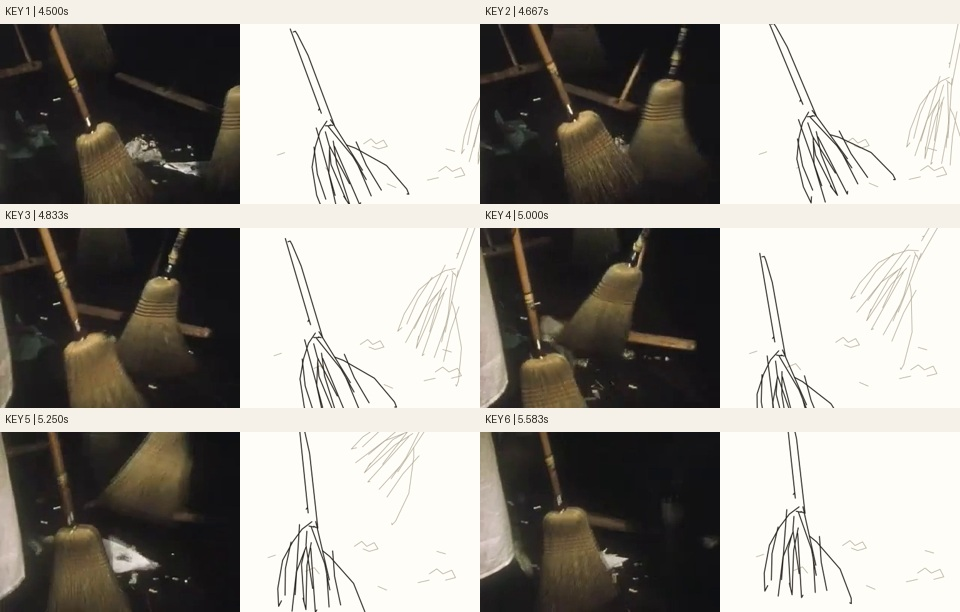
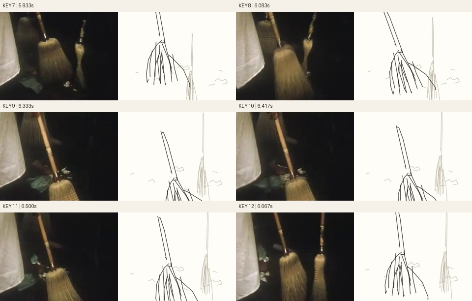
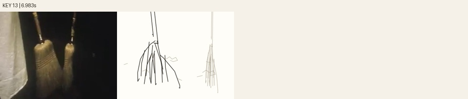
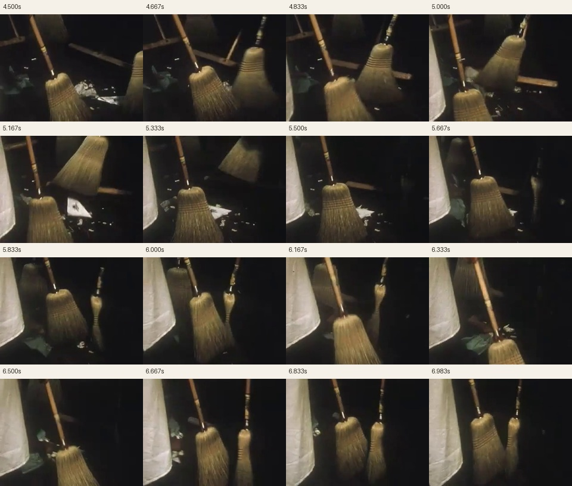
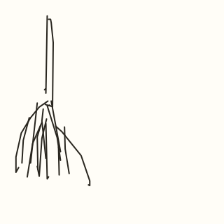

Three brooms sweep the floor
Seventeen native strokes describe the main straw broom. Two separately moving background brooms are preserved from the frozen source-observed scene, all native copies. The moving apron/operator is omitted, not treated as stationary extracted geometry.
Bounded repair after independent still critique: Scale and place only the two pale secondary broom exposures to observed head widths and right-edge/low-edge crops. The main17native bristle/handle strokes and their sweep remain bit-identical. Fresh review pending; normal-speed playback/classifier/contacts remain unrun. No training ran.
13 paired keys · 61 frames · 24 fps. Native Quick, Draw! key 6486360229675008.
Source and keyframe checks



Source interval

Construction compatibilityOriginal locked drawing

Native recordQuick, Draw! contributors / Google Creative Lab, CC BY 4.0. Archive reported rights remain in source.json. Review candidate; no training ran.